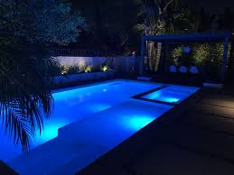
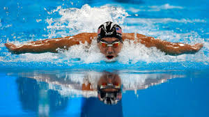

My Passion for Swimming
My Passion for Swimming
Swimming has been a part of my life for many years, and it’s more than just a sport to me – it’s a way to challenge myself, stay healthy, and clear my mind. Whether it’s a casual swim or an intense workout, swimming provides a unique combination of physical exertion and mental relaxation.
How I Started Swimming
I was introduced to swimming at a young age, and over the years, it has become a personal journey of improvement and perseverance. Initially, I started with basic swimming techniques, but over time, I progressed to more advanced strokes like freestyle, breaststroke, and butterfly. The more I swam, the more I realized how swimming could build both physical strength and mental resilience.
Why I Love Swimming
- Full-Body Workout: Swimming engages almost every muscle in the body, making it one of the best full-body workouts.
- Mental Clarity: The rhythmic movements of swimming help me focus and clear my mind, allowing me to relax and reduce stress.
- Endurance Building: Swimming has significantly improved my cardiovascular endurance, allowing me to push my limits and challenge myself in different ways.
The Benefits of Swimming
There are many reasons why swimming is one of the most popular forms of exercise around the world: - Low-Impact Exercise: Since swimming is gentle on the joints, it’s an ideal form of exercise for people of all ages and fitness levels. - Improved Cardiovascular Health: It increases heart rate and helps with better circulation, promoting overall heart health. - Stress Relief: The water’s resistance combined with deep breathing makes swimming an excellent way to release stress.
Personal Health Benefits
One of the most significant personal benefits I’ve experienced from swimming is its ability to help with back issues. I have disc degeneration disease, a condition that causes pain and discomfort in my lower back. Swimming provides gentle resistance and buoyancy, which reduces the pressure on my spine and helps to relieve back pain. The low-impact nature of the water allows me to exercise without exacerbating my condition, and over time, I’ve found that swimming strengthens the muscles around my back, offering long-term relief.
In addition, swimming has played a key role in helping me cope with insomnia. On days when I struggle to sleep, swimming helps relax my body and mind, promoting better sleep at night. The rhythm of the strokes, combined with controlled breathing, serves as a form of mindfulness, calming my thoughts and making it easier to fall asleep.
My Swimming Routine
Over the years, I’ve developed a structured routine that helps me maintain my fitness and improve my technique: - Warm-up: Light stretches and a few easy laps to get the body moving. - Main Set: A mix of different strokes and intervals to improve endurance, strength, and speed. - Cool Down: Slow, relaxed laps to help my muscles recover.
I also incorporate drills to focus on technique improvement, such as: - Breathing Drills: To improve lung capacity and stroke efficiency. - Kickboard Drills: To strengthen my legs and improve my kicking technique.
Swimming at Night
One of the things that make swimming even more enjoyable for me is the time of day when I choose to swim. I often prefer swimming at night, when the world around me is calm and peaceful. The water feels cooler, the pool is less crowded, and it’s a perfect time for quiet reflection. The serenity of night swimming gives me a sense of solitude and freedom, making it an ideal time to clear my mind, relax, and forget about the stresses of the day.
Night swimming has become a vital part of my routine, especially since it aligns with my need to decompress before heading to bed. It’s during these late-night swims that I find solace, calm my body for sleep, and relieve any physical tension from the day.

Swimming Competitions and Achievements
Although swimming is primarily a personal passion, I’ve also participated in a few local competitions. These experiences taught me how to handle pressure, improve my performance under timed conditions, and build a competitive spirit.
Michael Phelps: My Idol
One person who has always inspired me in my swimming journey is Michael Phelps, the most decorated Olympian of all time. His dedication to the sport, mental toughness, and relentless pursuit of excellence have always motivated me to push my limits in the pool.

Michael Phelps’ story of overcoming obstacles and achieving greatness despite his struggles resonates with me. His ability to stay focused on his goals and maintain consistency in his training has always been an inspiration to me, especially during times when swimming feels challenging.
Why Swimming Is Important to Me
Swimming is not just about physical fitness for me; it’s a way to escape from daily pressures, focus on personal growth, and set new goals. Whether it’s conquering a personal best time or simply enjoying the freedom of the water, swimming allows me to connect with myself and nature in a way that no other activity can match. Additionally, its therapeutic effects on my back and mental health have made it an essential part of my daily routine.
Conclusion
Through swimming, I have learned valuable lessons in discipline, perseverance, and self-improvement. It has become a cornerstone of my fitness routine and a passion that continues to shape my life in meaningful ways. Swimming not only helps me maintain physical health but also plays an integral role in managing my back condition and improving my sleep.
If you’re thinking of taking up swimming, I highly encourage you to start. It doesn’t matter if you’re a beginner or a seasoned swimmer – every swim session brings an opportunity to improve and push yourself further. And if you can, try swimming at night – the quiet, peaceful environment makes it an unforgettable experience.